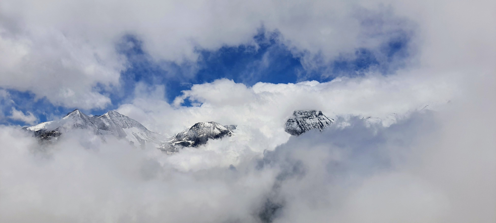
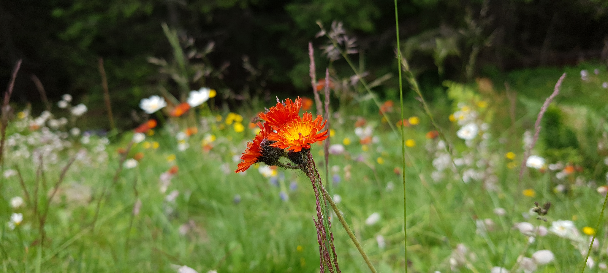
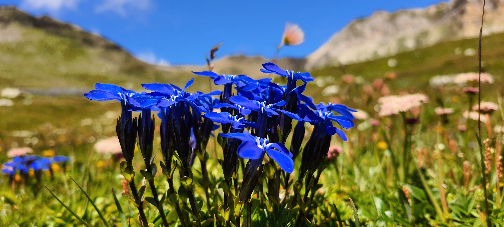
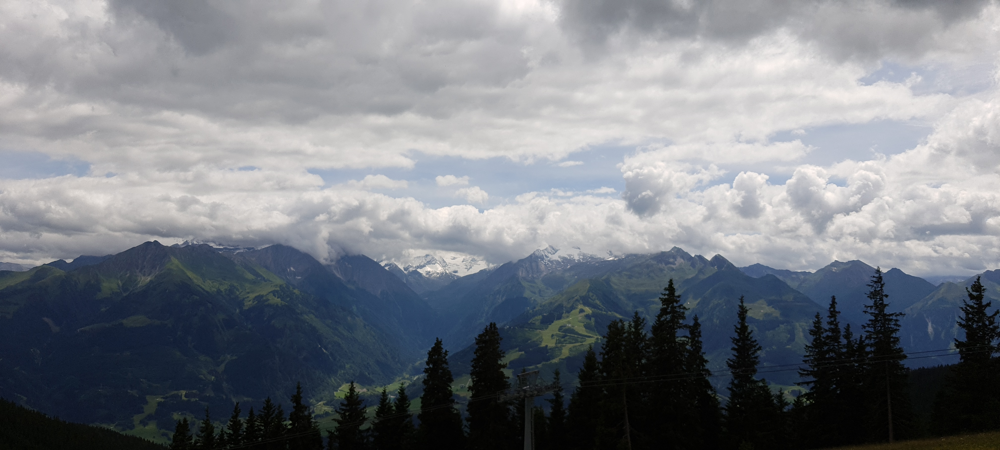
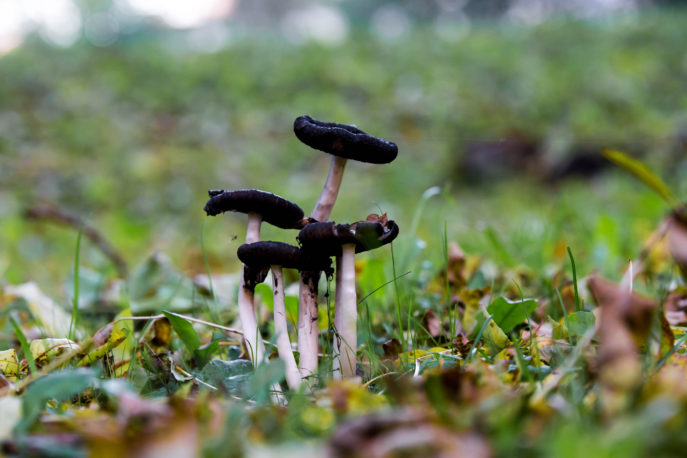

Mida ma teen
Disainin ja ehitan landing page'e, veebilehti ja kampaaniavisuaale, kus sõnum peab olema kohe loetav ja usaldusväärne.
Minust
Olen veebidisainer ja arendaja, kes teeb landing page'e, veebilehti ja brändivisuaale ideest kuni koodini. Disainin minimalistlikult, aga iseloomuga, et sõnum oleks kohe arusaadav ja CTA töötaks. Õpin Tallinna Polütehnikumis ning teen praktikat Fiizy OÜ-s, kus töötan tiimis turundus- ja e-maili visuaalide kallal.
Mida ma teen
Disainin ja ehitan landing page'e, veebilehti ja kampaaniavisuaale, kus sõnum peab olema kohe loetav ja usaldusväärne.
Kuidas ma töötan
Alustan alati eesmärgist, mitte efektist. Hea leht peab tunduma lihtne, kiire ja loogiline enne, kui ta on ilus.
Fotograafia
Lisaks veebile teen ka fotosid. See hoiab mu pilgu värskena ja mõjutab otseselt seda, kuidas ma mõtlen pildi, ruumi ja fookuse peale.
Vaata Unsplashi



